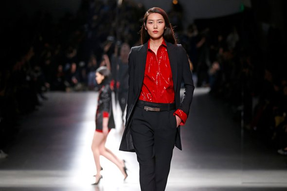

На восьмой позиции с доходом $6,5 млн, по версии Forbes, закрепилась китаянка Лю Вэнь. Она стала первой
азиатской представительницей гиганта Estée Lauder, первой китайской моделью, прошедшей по подиуму на ежегодном модном
показе Victoria's Secret Fashion Show, а в марте 2017 года Лю Вэнь стала первой китаянкой, появившейся на обложке журнала
American Vogue.